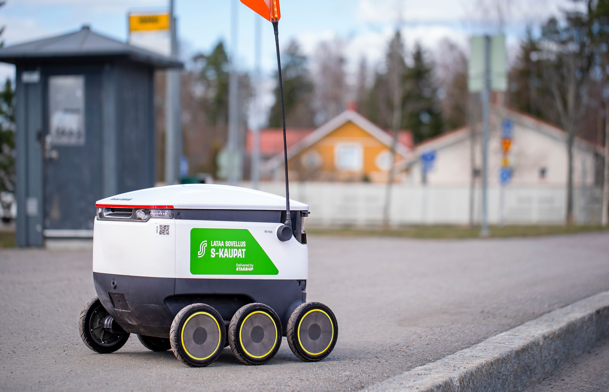
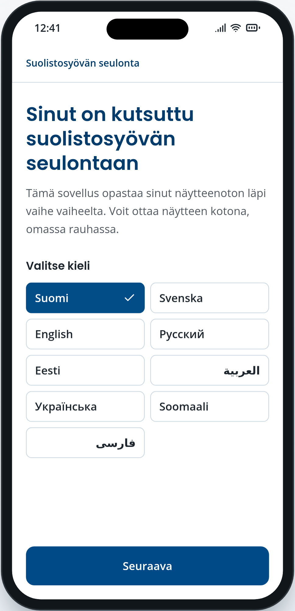
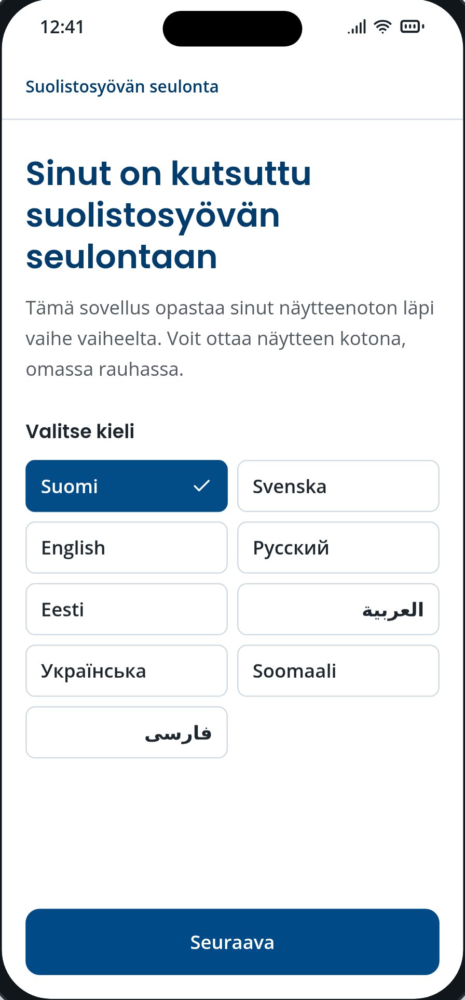
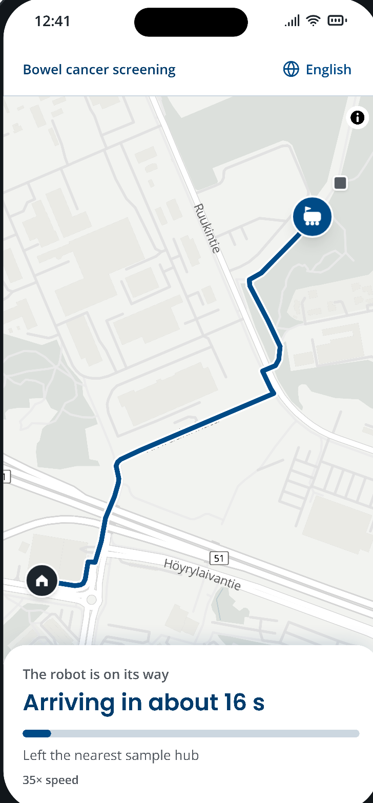

farmagusta.
Bowel screening, with pickup at your door
Too many tests never come back
30.4%
of invited people in Helsinki
did not return their test
12,789 people
Helsinki, 2024
Earlier detection matters
Five-year survival in the Flanders FIT screening study
94%
Found through screening
Observed survival in the study. Lead-time bias affects the comparison.
The gap is wider for
other language groups
Bowel screening participation in Finland, 2024
Finnish, Swedish or Sami mother tongue
74.5%Other or missing mother tongue
53.4%Make the test easier to finish
Hard to understand
→Guidance in nine languagesEasy to put off
→Reminders and a clear next stepHard to return
→A pickup at your doorThe letter
opens the app
Scan the QR code.
Choose your language.

Four steps, all from home

01Choose a language

02Take the sample

03Book a pickup

04Hand it over

An ordinary
delivery robot
No medical markings
Opened with the person’s phone
Pickup codes on the map
Use an existing delivery fleet
A proposed integration with Starship
01farmagusta
Book and group pickups
→02Robot partner
Collect at the door
→03Lab
Receive and register
The delivery integration and clinical handling still need a partner pilot.
One locked compartment per sample
First pickup
A opens. The others stay shut.
Next pickup
B opens. A stays locked.
At the lab
Staff access the collected samples.
Proposed compartment insert. Hardware access is simulated in the demo.
See who needs help.
Act from the map.

A clear next action for the nurse
No sample after 14 days
→Send a reminderRobot waiting at the door
→Check the pickupPositive result, no booking after 7 days
→Arrange a colonoscopyDemo thresholds are our assumptions, not clinical deadlines.
What return mail costs today
≈ €240,000
a year in the capital region
Estimated return postage and envelopes
at the national 80% participation target
Gross mailing cost only. Robot costs are not included; envelope cost is an estimate.
farmagusta.
Making cancer screening
easier to complete, so fewer
people are left behind.